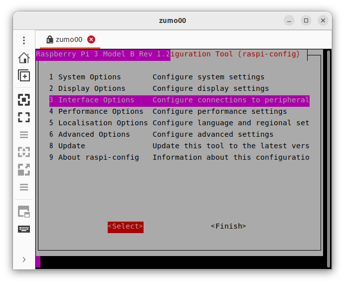
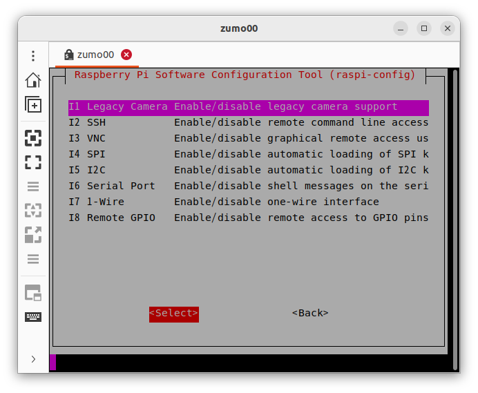
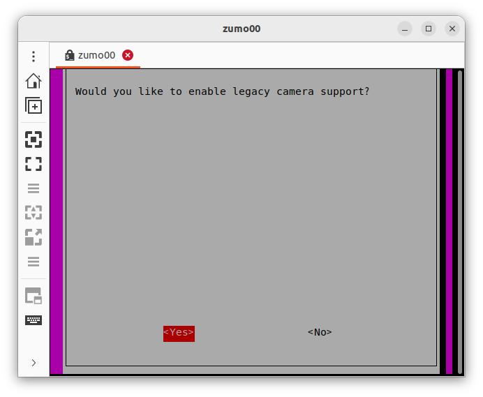

ラズパイカメラの使い方#
カメラを使って、画像処理をする説明をします。
カメラの有効化#
raspi-configをインストール。
pi@zumo00:~$ sudo apt-get update
pi@zumo00:~$ sudo apt-get install raspi-config
raspi-configの起動。
pi@zumo00:~$ sudo raspi-config
[3 Interface Options]を選択。
[I1 Legacy Camera]を選択。
Enableに設定。
OK。
終了。
再起動。
pi@zumo00:~$ sudo shutdown -r now
必要なパッケージのインストール#
ユーティリティのインストール。
pi@zumo00:~$ sudo apt install v4l-utils
カメラが認識されているか確認。エラーが出る。
pi@zumo00:~$ v4l2-ctl --list-devices
Failed to open /dev/video0: Permission denied
カメラの権限を確認。
pi@zumo00:~$ ls /dev/video0 -l
crw-rw---- 1 root video 81, 12 Mar 20 14:32 /dev/video0
カメラの権限を変更。
pi@zumo00:~$ sudo chmod 777 /dev/video0
カメラの権限が変更されているか確認。
pi@zumo00:~$ ls /dev/video0 -l
crwxrwxrwx 1 root video 81, 12 Mar 20 14:32 /dev/video0
再度、カメラが認識されているか確認。 /dev/video0が表示されていて、mmal serviceと出ていればOK。
pi@zumo00:~$ v4l2-ctl --list-devices
mmal service 16.1 (platform:bcm2835-v4l2-0):
/dev/video0
config.txtの編集。
pi@zumo00:~$ sudo nano /boot/firmware/config.txt
最後に1行追加する。
gpu_mem_1024=256
再起動。
pi@zumo00:~$ sudo shutdown -r now
カメラパッケージのインストール。
pi@zumo00:~$ sudo apt-get install ros-iron-v4l2-camera
カメラパッケージの実行。 ERRORやWARNが出るが気にしない。
pi@zumo00:~$ ros2 run v4l2_camera v4l2_camera_node
[INFO] [1690932868.971591124] [v4l2_camera]: Driver: bm2835 mmal
[INFO] [1690932868.972720620] [v4l2_camera]: Version: 331619
[INFO] [1690932868.972842439] [v4l2_camera]: Device: mmal service 16.1
[INFO] [1690932868.972927488] [v4l2_camera]: Location: platform:bcm2835-v4l2-0
[INFO] [1690932868.973019777] [v4l2_camera]: Capabilities:
[INFO] [1690932868.973087327] [v4l2_camera]: Read/write: YES
[INFO] [1690932868.973155658] [v4l2_camera]: Streaming: YES
[INFO] [1690932868.973260134] [v4l2_camera]: Current pixel format: JPEG @ 1024x768
[INFO] [1690932868.975125961] [v4l2_camera]: Available pixel formats:
[INFO] [1690932868.975221479] [v4l2_camera]: YU12 - Planar YUV 4:2:0
[INFO] [1690932868.975325538] [v4l2_camera]: YUYV - YUYV 4:2:2
[INFO] [1690932868.975395328] [v4l2_camera]: RGB3 - 24-bit RGB 8-8-8
[INFO] [1690932868.975464961] [v4l2_camera]: JPEG - JFIF JPEG
[INFO] [1690932868.975548031] [v4l2_camera]: H264 - H.264
[INFO] [1690932868.975616831] [v4l2_camera]: MJPG - Motion-JPEG
[INFO] [1690932868.975685527] [v4l2_camera]: YVYU - YVYU 4:2:2
[INFO] [1690932868.975765108] [v4l2_camera]: VYUY - VYUY 4:2:2
[INFO] [1690932868.975846824] [v4l2_camera]: UYVY - UYVY 4:2:2
[INFO] [1690932868.975937446] [v4l2_camera]: NV12 - Y/CbCr 4:2:0
[INFO] [1690932868.976006767] [v4l2_camera]: BGR3 - 24-bit BGR 8-8-8
[INFO] [1690932868.976085306] [v4l2_camera]: YV12 - Planar YVU 4:2:0
[INFO] [1690932868.976159731] [v4l2_camera]: NV21 - Y/CrCb 4:2:0
[INFO] [1690932868.976227958] [v4l2_camera]: RX24 - 32-bit XBGR 8-8-8-8
[INFO] [1690932868.976298164] [v4l2_camera]: Available controls:
[INFO] [1690932868.976417692] [v4l2_camera]: Brightness (1) = 50
[INFO] [1690932868.976505658] [v4l2_camera]: Contrast (1) = 0
[INFO] [1690932868.976600498] [v4l2_camera]: Saturation (1) = 0
[INFO] [1690932868.976686121] [v4l2_camera]: Red Balance (1) = 1000
[INFO] [1690932868.977006892] [v4l2_camera]: Blue Balance (1) = 1000
[INFO] [1690932868.977110743] [v4l2_camera]: Horizontal Flip (2) = 0
[INFO] [1690932868.977196469] [v4l2_camera]: Vertical Flip (2) = 0
[INFO] [1690932868.977279540] [v4l2_camera]: Power Line Frequency (3) = 1
[INFO] [1690932868.977362610] [v4l2_camera]: Sharpness (1) = 0
[INFO] [1690932868.977454118] [v4l2_camera]: Color Effects (3) = 0
[INFO] [1690932868.977536719] [v4l2_camera]: Rotate (1) = 0
[INFO] [1690932868.977618592] [v4l2_camera]: Color Effects, CbCr (1) = 32896
[ERROR] [1690932868.977764108] [v4l2_camera]: Failed getting value for control 10027009: Permission denied (13); returning 0!
[INFO] [1690932868.978126076] [v4l2_camera]: Codec Controls (6) = 0
[INFO] [1690932868.978245864] [v4l2_camera]: Video Bitrate Mode (3) = 0
[INFO] [1690932868.978334923] [v4l2_camera]: Video Bitrate (1) = 10000000
[INFO] [1690932868.978429504] [v4l2_camera]: Repeat Sequence Header (2) = 0
[ERROR] [1690932868.978520855] [v4l2_camera]: Failed getting value for control 10029541: Permission denied (13); returning 0!
[INFO] [1690932868.978646320] [v4l2_camera]: Force Key Frame (4) = 0
[INFO] [1690932868.978732203] [v4l2_camera]: H264 Minimum QP Value (1) = 0
[INFO] [1690932868.978815585] [v4l2_camera]: H264 Maximum QP Value (1) = 0
[INFO] [1690932868.978905062] [v4l2_camera]: H264 I-Frame Period (1) = 60
[INFO] [1690932868.978989486] [v4l2_camera]: H264 Level (3) = 11
[INFO] [1690932868.979071515] [v4l2_camera]: H264 Profile (3) = 4
[ERROR] [1690932868.979155887] [v4l2_camera]: Failed getting value for control 10092545: Permission denied (13); returning 0!
[INFO] [1690932868.979263123] [v4l2_camera]: Camera Controls (6) = 0
[INFO] [1690932868.979350308] [v4l2_camera]: Auto Exposure (3) = 0
[INFO] [1690932868.979441139] [v4l2_camera]: Exposure Time, Absolute (1) = 1000
[INFO] [1690932868.979524938] [v4l2_camera]: Exposure, Dynamic Framerate (2) = 0
[INFO] [1690932868.979607800] [v4l2_camera]: Auto Exposure, Bias (9) = 12
[INFO] [1690932868.979690662] [v4l2_camera]: White Balance, Auto & Preset (3) = 1
[INFO] [1690932868.979773160] [v4l2_camera]: Image Stabilization (2) = 0
[INFO] [1690932868.979856386] [v4l2_camera]: ISO Sensitivity (9) = 0
[INFO] [1690932868.979946019] [v4l2_camera]: ISO Sensitivity, Auto (3) = 1
[INFO] [1690932868.980028308] [v4l2_camera]: Exposure, Metering Mode (3) = 0
[INFO] [1690932868.980110701] [v4l2_camera]: Scene Mode (3) = 0
[ERROR] [1690932868.980264134] [v4l2_camera]: Failed getting value for control 10289153: Permission denied (13); returning 0!
[INFO] [1690932868.980448243] [v4l2_camera]: JPEG Compression Controls (6) = 0
[INFO] [1690932868.980540583] [v4l2_camera]: Compression Quality (1) = 30
[INFO] [1690932868.984375515] [v4l2_camera]: Requesting format: 1024x768 YUYV
[INFO] [1690932868.989716286] [v4l2_camera]: Success
[INFO] [1690932868.990578498] [v4l2_camera]: Requesting format: 640x480 YUYV
[INFO] [1690932868.991413472] [v4l2_camera]: Success
[WARN] [1690932868.993148522] [v4l2_camera]: Control type not currently supported: 6, for control: Codec Controls
[WARN] [1690932868.993662256] [v4l2_camera]: Control type not currently supported: 4, for control: Force Key Frame
[WARN] [1690932868.994705036] [v4l2_camera]: Control type not currently supported: 6, for control: Camera Controls
[WARN] [1690932868.995408034] [v4l2_camera]: Control type not currently supported: 9, for control: Auto Exposure, Bias
[WARN] [1690932868.995902446] [v4l2_camera]: Control type not currently supported: 9, for control: ISO Sensitivity
[WARN] [1690932868.996506125] [v4l2_camera]: Control type not currently supported: 6, for control: JPEG Compression Controls
[INFO] [1690932868.996804657] [v4l2_camera]: Starting camera
[WARN] [1690932869.777105331] [v4l2_camera]: Image encoding not the same as requested output, performing possibly slow conversion: yuv422_yuy2 => rgb8
[INFO] [1690932869.817848274] [v4l2_camera]: using default calibration URL
[INFO] [1690932869.818274458] [v4l2_camera]: camera calibration URL: file:///home/pi/.ros/camera_info/mmal_service_16.1.yaml
[ERROR] [1690932869.818839493] [camera_calibration_parsers]: Unable to open camera calibration file [/home/pi/.ros/camera_info/mmal_service_16.1.yaml]
[WARN] [1690932869.819140525] [v4l2_camera]: Camera calibration file /home/pi/.ros/camera_info/mmal_service_16.1.yaml not found
トピックの確認。/image/rawがカメラからのデータ。
pi@zumo00:~$ ros2 topic list
/camera_info
/image_raw
/parameter_events
/rosout
次に、PCでカメラのデータが受信できるか確認。
ubuntu@mbc084:~$ ros2 topic list
/camera_info
/image_raw
/parameter_events
/rosout
rqt_image_viewで表示。
ubuntu@mbc084:~$ ros2 run rqt_image_view rqt_image_view
フレームレートを確認・変更する方法#
ユーティリティのインストール。
pi@zumo00:~$ sudo apt install v4l-utils
カメラのフォーマットを確認。
pi@zumo00:~$ v4l2-ctl --list-formats-ext
ioctl: VIDIOC_ENUM_FMT
Type: Video Capture
[0]: 'YU12' (Planar YUV 4:2:0)
Size: Stepwise 32x32 - 3280x2464 with step 2/2
[1]: 'YUYV' (YUYV 4:2:2)
Size: Stepwise 32x32 - 3280x2464 with step 2/2
[2]: 'RGB3' (24-bit RGB 8-8-8)
Size: Stepwise 32x32 - 3280x2464 with step 2/2
[3]: 'JPEG' (JFIF JPEG, compressed)
Size: Stepwise 32x32 - 3280x2464 with step 2/2
[4]: 'H264' (H.264, compressed)
Size: Stepwise 32x32 - 3280x2464 with step 2/2
[5]: 'MJPG' (Motion-JPEG, compressed)
Size: Stepwise 32x32 - 3280x2464 with step 2/2
[6]: 'YVYU' (YVYU 4:2:2)
Size: Stepwise 32x32 - 3280x2464 with step 2/2
[7]: 'VYUY' (VYUY 4:2:2)
Size: Stepwise 32x32 - 3280x2464 with step 2/2
[8]: 'UYVY' (UYVY 4:2:2)
Size: Stepwise 32x32 - 3280x2464 with step 2/2
[9]: 'NV12' (Y/CbCr 4:2:0)
Size: Stepwise 32x32 - 3280x2464 with step 2/2
[10]: 'BGR3' (24-bit BGR 8-8-8)
Size: Stepwise 32x32 - 3280x2464 with step 2/2
[11]: 'YV12' (Planar YVU 4:2:0)
Size: Stepwise 32x32 - 3280x2464 with step 2/2
[12]: 'NV21' (Y/CrCb 4:2:0)
Size: Stepwise 32x32 - 3280x2464 with step 2/2
[13]: 'RX24' (32-bit XBGR 8-8-8-8)
Size: Stepwise 32x32 - 3280x2464 with step 2/2
カメラのフレームレートを確認。
pi@zumo00:~$ v4l2-ctl -P
Streaming Parameters Video Capture:
Capabilities : timeperframe
Frames per second: 30.000 (30000/1000)
Read buffers : 1
カメラのフレームレートを変更。
pi@zumo00:~$ v4l2-ctl -p 5
Frame rate set to 5.000 fps
変更したカメラのフレームレートを確認。
pi@zumo00:~$ v4l2-ctl -P
Streaming Parameters Video Capture:
Capabilities : timeperframe
Frames per second: 5.000 (5000/1000)
Read buffers : 1
画像処理をするプログラムを作る#
カメラで取得した画像をグレースケールに変換して表示してみましょう。
パケージはcv_test、ファイル名はcam_gray.pyとします。
画像処理は次の手順で行っています。ラズパイカメラから取得した画像はROSのImage型であることに注意してください。
Webカメラの画像を取得する（data）
OpenCVの標準データ形式に変換する（cv_image）
画像処理をする（cv_gray_image）
ROSのImage型に変換する（ros_image）
gray.pyをコピーしてcam_gray.pyを作ってください。
ubuntu@mbc084:~$ cd ~/ros2_ws/
ubuntu@mbc084:~/ros2_ws$ cp src/cv_test/cv_test/gray.py src/cv_test/cv_test/cam_gray.py
cam_gray.pyを開く。
ubuntu@mbc084:~/ros2_ws$ nano src/cv_test/cv_test/cam_gray.py
編集。
import rclpy
from rclpy.node import Node
from sensor_msgs.msg import Image
from cv_bridge import CvBridge
import cv2
class ImagePublisher(Node):
def __init__(self):
super().__init__('image_publisher')
self.publisher_ = self.create_publisher(Image, 'gray_image', 10)
self.subscription = self.create_subscription(
Image,
'image_raw',
self.camera_callback,
10)
self.subscription
self.bridge = CvBridge()
def camera_callback(self, data):
cv_image = self.bridge.imgmsg_to_cv2(data)
cv_gray_image = cv2.cvtColor(cv_image, cv2.COLOR_BGR2GRAY)
ros_image = self.bridge.cv2_to_imgmsg(cv_gray_image, 'mono8')
self.publisher_.publish(ros_image)
def main(args=None):
rclpy.init(args=args)
image_publisher = ImagePublisher()
rclpy.spin(image_publisher)
image_publisher.destroy_node()
rclpy.shutdown()
if __name__ == '__main__':
main()
setup.pyを開く。
ubuntu@mbc084:~/ros2_ws$ nano src/cv_test/setup.py
編集。
from setuptools import setup
package_name = 'cv_test'
setup(
name=package_name,
version='0.0.0',
packages=[package_name],
data_files=[
('share/ament_index/resource_index/packages',
['resource/' + package_name]),
('share/' + package_name, ['package.xml']),
],
install_requires=['setuptools'],
zip_safe=True,
maintainer='ubuntu',
maintainer_email='ubuntu@todo.todo',
description='TODO: Package description',
license='TODO: License declaration',
tests_require=['pytest'],
entry_points={
'console_scripts': [
'img_publisher = cv_test.image_view:main',
'gray_publisher = cv_test.gray:main',
'circle_publisher = cv_test.circle:main',
'binary_publisher = cv_test.binary:main',
'edge_publisher = cv_test.edge:main',
'face_publisher = cv_test.face_detect:main',
'eye_publisher = cv_test.eye_detect:main',
'cam_publisher = cv_test.cam_gray:main',
],
},
)
ビルド。
ubuntu@mbc084:~/ros2_ws$ colcon build --packages-select cv_test
セットアップファイルの反映。
ubuntu@mbc084:~/ros2_ws$ source install/local_setup.bash
cv_testパッケージのcam_publisherノードの実行
ubuntu@mbc084:~/ros2_ws$ ros2 run cv_test cam_publisher
確認。
ubuntu@mbc084:~/ros2_ws$ ros2 run rqt_image_view rqt_image_view
演習4「カメラで取得した画像から顔を検出する」#
（１）カメラの画像を使って、顔認識するプログラムを作ってください。#
ファイル名は「cam_face_detect.py」とします。
gray.pyをコピーしてcam_gray.pyを作ってください。
ubuntu@mbc084:~/ros2_ws$ cp src/cv_test/cv_test/face_detect.py src/cv_test/cv_test/cam_face_detect.py
cam_gray.pyを開く。
ubuntu@mbc084:~/ros2_ws$ nano src/cv_test/cv_test/cam_face_detect.py
編集。
import rclpy
from rclpy.node import Node
from sensor_msgs.msg import Image
from cv_bridge import CvBridge
import cv2
class ImagePublisher(Node):
def __init__(self):
super().__init__('image_publisher')
self.publisher_ = self.create_publisher(Image, 'face_detect',>
self.subscription = self.create_subscription(
Image,
'image_raw',
self.camera_callback,
10)
self.subscription
self.bridge = CvBridge()
def camera_callback(self, data):
cv_image = self.bridge.imgmsg_to_cv2(data)
cv_rotate_image = cv2.rotate(cv_image, cv2.ROTATE_180)
filename = '/usr/share/opencv4/haarcascades/haarcascade_front>
cascade = cv2.CascadeClassifier(filename)
face = cascade.detectMultiScale(cv_rotate_image)
if len(face) > 0:
for r in face:
x, y = r[0:2]
width, height = r[0:2] + r[2:4]
cv2.rectangle(cv_rotate_image, (x, y), (width, height>
else:
self.get_logger().info('not detect face')
ros_image = self.bridge.cv2_to_imgmsg(cv_rotate_image, 'bgr8')
self.publisher_.publish(ros_image)
def main(args=None):
rclpy.init(args=args)
image_publisher = ImagePublisher()
rclpy.spin(image_publisher)
image_publisher.destroy_node()
rclpy.shutdown()
if __name__ == '__main__':
main()
setup.pyを開く。
ubuntu@mbc084:~/ros2_ws$ nano src/cv_test/setup.py
編集。
from setuptools import setup
package_name = 'cv_test'
setup(
name=package_name,
version='0.0.0',
packages=[package_name],
data_files=[
('share/ament_index/resource_index/packages',
['resource/' + package_name]),
('share/' + package_name, ['package.xml']),
],
install_requires=['setuptools'],
zip_safe=True,
maintainer='ubuntu',
maintainer_email='ubuntu@todo.todo',
description='TODO: Package description',
license='TODO: License declaration',
tests_require=['pytest'],
entry_points={
'console_scripts': [
'img_publisher = cv_test.image_view:main',
'gray_publisher = cv_test.gray:main',
'circle_publisher = cv_test.circle:main',
'binary_publisher = cv_test.binary:main',
'edge_publisher = cv_test.edge:main',
'face_publisher = cv_test.face_detect:main',
'eye_publisher = cv_test.eye_detect:main',
'cam_publisher = cv_test.cam_gray:main',
'cam_face_publisher = cv_test.cam_face_detect:main',
],
},
)
ビルド。
ubuntu@mbc084:~/ros2_ws$ colcon build --packages-select cv_test
セットアップファイルの反映。
ubuntu@mbc084:~/ros2_ws$ source install/local_setup.bash
cv_testパッケージのgray_publisherノードの実行
ubuntu@mbc084:~/ros2_ws$ ros2 run cv_test cam_face_publisher
確認。
ubuntu@mbc084:~/ros2_ws$ ros2 run rqt_image_view rqt_image_view
（２）cam_face_detect.pyを実行するlaunchファイルを作ってください。#
ファイル名はcam_face_detect_launch_pyとします。
PCからRaspberry Piのカメラを起動できる？